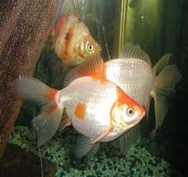
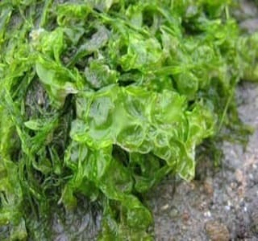
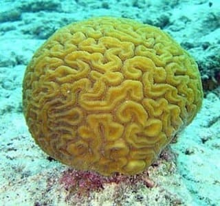
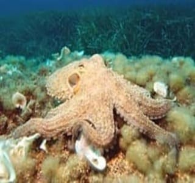
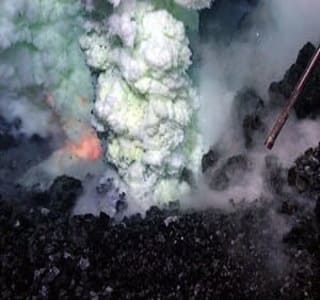

 |
Рыбы (лат. Pisces) — обширная группа водных челюстноротых позвоночных животных, ранее считавшаяся надклассом позвоночных, ещё ранее — классом. Рыбы характеризуются жаберным дыханием на всех этапах постэмбрионального развития организма. С точки зрения кладистики четвероногие являются специализированными лопастепёрыми рыбами. Тем не менее, поскольку традиционно понятие «рыбы» относится к парафилетической группе, не включающей четвероногих, в современной систематике рыбы отсутствуют как таксон. |
 |
Водоросли (лат. Algae) — гетерогенная экологическая группа преимущественно фотоавтотрофных одноклеточных, колониальных или многоклеточных организмов, обитающих, как правило, в водной среде, в систематическом отношении представляющая собой совокупность многих отделов. Вступая в симбиоз с грибами, водоросли в ходе эволюции образовали совершенно новые организмы — лишайники. Наука о водорослях называется альгологией, её изучение является одним из самых важных этапов при подготовке специалистов в области марикультуры, рыбоводства и морской экологии. |
 |
Коралл (лат. Alcyoneum) — материал скелета колонии коралловых полипов. Большие скопления кораллов формируют коралловые рифы и коралловые острова. Рост кораллов составляет обычно даже в благоприятных условиях не более 1 см в год в продольном направлении, поэтому на образование среднего рифа могут уйти столетия, острова — тысячелетия. |
 |
Осьминоги, или спрутовые — самый известный отряд головоногих моллюсков. Типичные осьминоги — представители подотряда Incirrina, придонные животные. Но некоторые представители этого подотряда и все виды второго подотряда Cirrina — пелагические животные, обитающие в толще воды, причём многие из них встречаются только на больших глубинах. Наука, изучающая осьминогов и других головоногих моллюсков, называется теутология. |
 |
Подводный вулкан — разновидность вулканов. Эти вулканы расположены на дне океана. Большинство современных вулканов расположено в пределах трёх основных вулканических поясов: Тихоокеанского, Средиземноморско-Индонезийского и Атлантического. Как свидетельствуют результаты изучения геологического прошлого нашей планеты, подводные вулканы по своим масштабам и объёму поступавших из недр Земли продуктов выброса значительно превосходят вулканы на суше. Если на суше ежегодно из 20—30 вулканических извержений поступает в среднем до полутора кубических километров расплавленной магмы в год, то за это же время из подводных вулканов извергается материала в 12—15 раз больше. |
| Наверх |